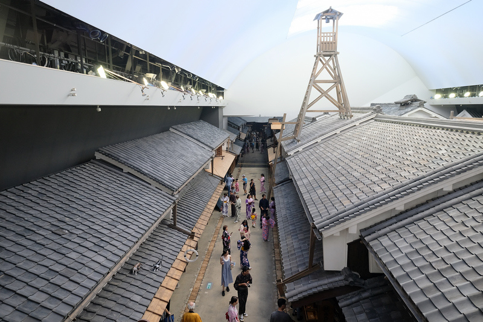
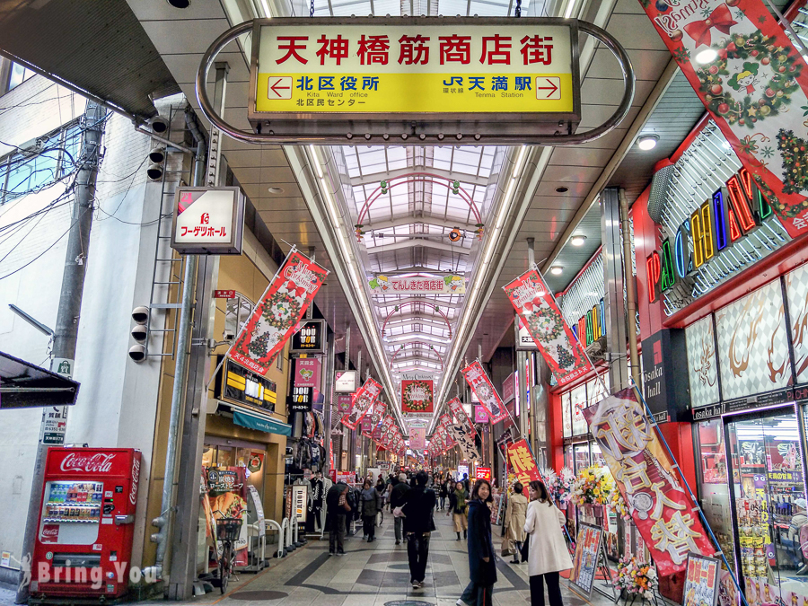
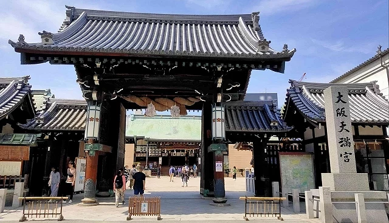
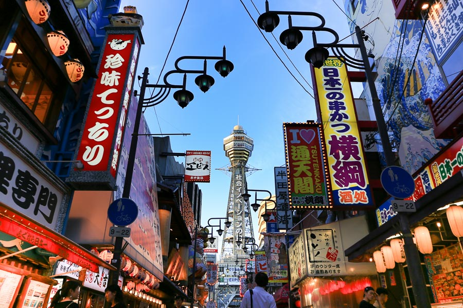
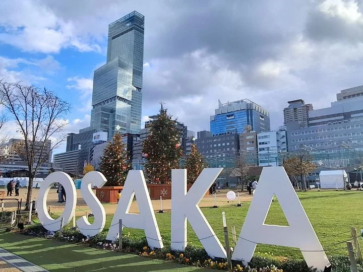

10:00 - 11:30大阪生活今昔館
從飯店所在的大阪梅田，搭乘大阪地下鐵谷町線（東梅田駅上車），直達「天神橋筋六丁目站」，不需轉乘。車程約 4 分鐘，票價 190 日圓。從 3 號出口搭電梯直通大樓 8 樓。
10:00 開館直奔進去，體驗江戶時代的大阪街景，室內冷氣開放非常舒服。
沿途停靠：東梅田 → 中崎町 → 天神橋筋六丁目（共 3 站）。
門票：大人 600 円・高大生 300 円。
館內和服體驗最搶手，只要 1,000 日圓就能穿和服，建議一到就先預約。

11:30 - 14:00天神橋筋商店街
步行（由北往南一路下坡逛，最省力）。
【美食攻略】
春駒壽司或千草大阪燒：建議 11:45 前排隊吃正餐。
Happy Camper Bagel：極品貝果，有經過記得先買，以免下午售罄。
中村屋可樂餅：走累了隨手買一個當點心。

14:00 - 14:40大阪天滿宮
從商店街散步過去（約 5-8 分鐘）。
參拜學問之神。參拜完後往「南森町站」步行（約 5 分鐘）。
交通移動時間 南森町站 ➡️ 惠美須町站
搭乘大阪地下鐵堺筋線（往天下茶屋方向），直達免轉乘！車程僅約 8 分鐘。
【14:45 後推薦班次】（每 5~8 分鐘一班）
14:44、14:50、14:56、15:03、15:10
請至堺筋線 1 號月台乘車。
沿途停靠：南森町 → 北浜 → 堺筋本町 → 長堀橋 → 日本橋 → 恵美須町（共 6 站）。

14:55 - 17:30通天閣 & TOWER SLIDER
從惠美須町站 3 號出口出站，正前方即是通天閣，步行 2 分鐘。
體驗從 22 公尺高、10 秒衝刺而下的巨型溜滑梯！預留約 2 小時排隊與參觀非常充裕。
兩項體驗：通天閣溜滑梯「TOWER SLIDER」、高空體驗「Dive&Walk」。

17:30 - 19:00阿倍野展望台（HARUKAS 300）
從通天閣步行前往阿倍野 HARUKAS（約 17~20 分鐘），或沿新世界／天王寺公園方向散步過去。
日本最高摩天樓「あべのハルカス」60 樓展望台，可俯瞰大阪市景，傍晚時段能同時看到日落與夜景。
🚃 天王寺 ➡️ 大阪梅田
方案一・JR：從阿倍野 HARUKAS 步行至 JR「天王寺」站，搭乘 JR 大阪環狀線外回り（京橋／桜ノ宮方向）直達大阪駅（梅田），不需轉乘。車程約 17 分鐘，票價 240 日圓。
沿途停靠：天王寺 → 寺田町 → 桃谷 → 鶴橋 → 玉造 → 森ノ宮 → 大阪城公園 → 京橋 → 桜ノ宮 → 天満 → 大阪（共 11 站）。
方案二・地下鐵谷町線：搭乘大阪地下鐵谷町線（大日方向）直達東梅田駅，不需轉乘。車程約 14 分鐘，票價 290 日圓。
沿途停靠：天王寺 → 四天王寺前夕陽ヶ丘 → 谷町九丁目 → 谷町六丁目 → 谷町四丁目 → 天満橋 → 南森町 → 東梅田（共 8 站）。